The first pair of images showcases the robot moving forward with balanced motor speeds.
When both motors move at the same speed, the robot travels in a straight line. Equal motor speeds ensure the robot maintains a forward trajectory without turning.
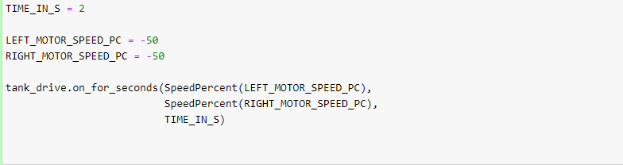 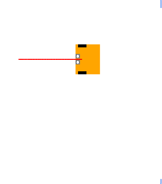The second pair illustrates the robot turning right.
The left motor moves faster than the right motor. This speed difference causes the robot to turn right. The greater the speed difference, the sharper the turn to the right.
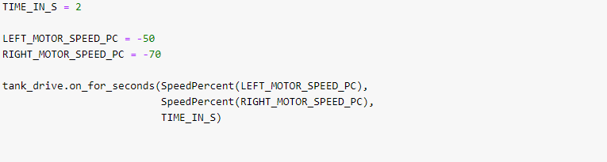 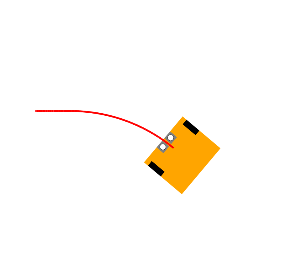The third pair shows the robot turning on the spot.
The right motor rorates the same speed backwards as the left motor rotates forward. This results in the robot turning on the spot stationary.
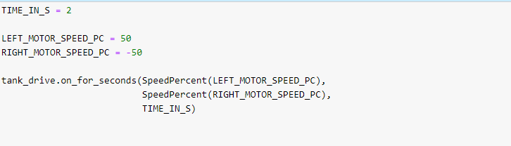 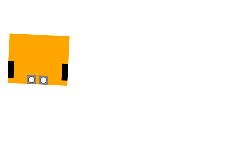The fourth pair demonstrates the robot sharply turning left.
The left motor rotates faster than the right motor. This causes the robot to sharply turn left.
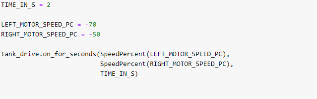 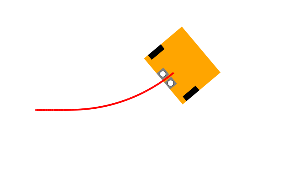The fifth pair demonstrates the robot sharply turning right.
The left motor rotates faster than the right rotor. This causes the robot to sharply turn right.
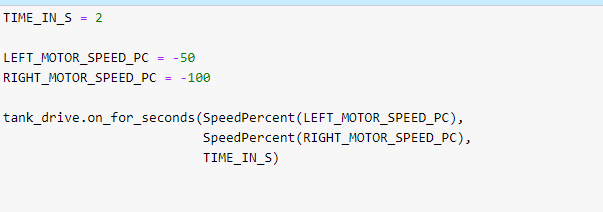 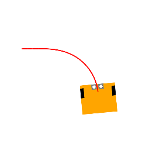Here a loop has been created using python to transverse the robot 5 times, and count out loud the number of transversals.
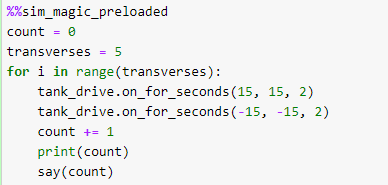 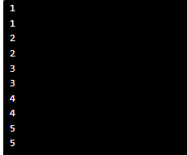